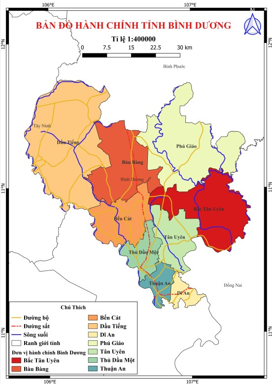
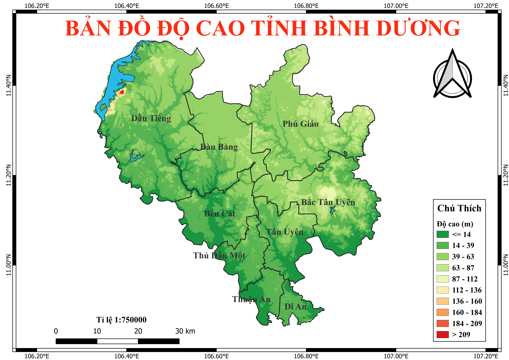

Thông tin tổng quan tỉnh Bình Dương
1. Vị trí địa lý
Bình Dương là một tỉnh nằm ở miền Đông Nam Bộ. Diện tích tự nhiên của tỉnh khoảng 2.695,2 km2 (khoảng 0,83% diện tích tự nhiên của cả nước), nằm trong 11o52’ – 12o18’ Vĩ Bắc, 106°45′- 107°67’30” kinh độ Đông.
+ Phía Bắc nằm giáp tỉnh Bình Phước.
+ Phía Nam giáp thành phố Hồ Chí Minh.
+ Phía Tây giáp tỉnh Tây Ninh và thành phố Hồ Chí Minh.
+ Phía Đông giáp tỉnh Đồng Nai.
2. Địa hình
Tỉnh Bình Dương nằm ở vị trí rìa tiếp xúc giữa đới nâng bóc mòn Đà Lạt và đới sụt lún tích tụ đồng bằng sông Cửu Long với hai hệ đứt gãy chính phân cắt, vì vậy địa hình mang tính phân bậc theo hướng thấp dần từ Bắc xuống Nam
Nhìn chung, địa hình tỉnh Bình Dương đặc trưng cho vùng trung du tiếp giáp giữa vùng núi cao Nam Trường Sơn và đồng bằng thấp Nam bộ. Bề mặt địa hình có độ cao trung bình từ 60m đến 40m so với mực nước biển ở phía Bắc và hạ thấp xuống 30m đến 10m so với mực nước biển ở phía Nam. Dựa vào độ cao và đặc điểm hình thái, có thể chia diện tích tỉnh Bình Dương ra 4 kiểu địa hình chính: Vùng đồi núi thấp ở huyện Phú Giáo, huyện Bắc Tân Uyên và thị xã Tân Uyên chiếm khoảng 40% diện tích toàn tỉnh, vùng địa hình bằng phẳng có ở tất cả huyện, thị xã, thành phố chiếm khoảng 55% diện tích toàn tỉnh, vùng địa hình thung lũng bãi bồi chiếm khoảng 5% diện tích toàn tỉnh và vùng địa hình núi sót ở phía Nam thị xã Dĩ An và huyện Dầu Tiếng chiếm diện tích không đáng kể.
Tự nhiên đã tạo cho vùng đất này có nhiều dạng địa mạo khác nhau: có vùng bị bào mòn, có vùng tích tụ (do có sự lắng đọng của các vật liệu xâm thực theo dòng chảy), có vùng vừa bị bào mòn, vừa tích tụ và lắng đọng. Hiện nay, trên toàn diện tích đang tiếp tục xảy ra các hoạt động chủ yếu là rửa trôi, bào mòn. Do diện tích rừng bị thu hẹp, thảm thực vật bị tàn phá nặng nề, nên các tác động xâm thực ven sông suối, các rãnh xói trên bề mặt địa hình đang có xu hướng gia tăng, đặc biệt trên các vùng có hoạt động kinh tế của con người.
3. Đất đai
Đất đai Bình Dương rất đa dạng và phong phú về chủng loại, có thể chia thành những nhóm chính sau đây:
+ Đất xám có diện tích khoảng 142.444 ha, chiếm 54,8% tổng diện tích đất đai của tỉnh, được phân bố hầu hết trên địa bàn các huyện Dầu Tiếng, thị xã Bến Cát, thị xã Thuận An, thành phố Thủ Dầu Một. Loại đất này phù hợp với nhiều loại cây trồng, nhất là cây công nghiệp, cây ăn trái.
+ Đất đỏ vàng có khoảng 65.243 ha chiếm 25,12% diện tích đất đai toàn tỉnh, phân bổ chủ yếu ở các huyện Bắc Tân Uyên, Phú Giáo, thị xã Tân Uyên, thị xã Bến Cát và một vài nơi ở huyện Dầu Tiếng và thị xã Dĩ An. Loại đất này thích hợp với loại cây trồng có giá trị kinh tế cao như cao su, cà phê, tiêu, điều, cây ăn trái và rau màu..
+ Đất phù sa có diện tích khoảng 15.725 ha chiếm 6,05% tổng diện tích đất đai của tỉnh, chủ yếu phân bổ ở những vùng thung lũng bãi bồi dọc sông Sài Gòn và sông Đồng Nai. Đất phù sa ở Bình Dương được xếp vào loại phù sa trẻ, có độ phì nhiêu cao. Do vậy, đất phù sa ở Bình Dương được sử dụng cho việc trồng lúa, lương thực, rau, quả, đặc biệt là trồng cây ăn quả đặc sản, chất lượng cao.
+ Đất phèn có khoảng 3.300 ha phân bổ chủ yếu ở khu vực thuộc Lái Thiêu, thị xã Thuận An dọc sông Sài Gòn và khu vực dọc sông Thị Tính. Đất này có nơi rất chua (pH=3,5), nghèo lân. Loại đất phèn sau khi được cải tạo có thể trồng lúa, rau và cây ăn trái, v.v...
+ Đất dốc tụ có diện tích khoảng 3.200 ha, phân bổ trong các dạng hợp thủy xen kẽ với nhóm đất đỏ vàng hoặc đất xám, thường là ở nơi có địa hình thấp, bằng phẳng, các khoảng giữa những đồi phù sa cổ, tập trung cao ở thị xã Bến Cát, thị xã Tân Uyên. Đất dốc tụ hình thành do quá trình bồi tích nên có độ phì nhiêu khá cao.
+ Đất xói mòn trơ sỏi đá chỉ có diện tích rất nhỏ, khoảng 91 ha. Nhóm này phân bổ chủ yếu ở núi Châu Thới, Tha La, được sử dụng khai thác đá làm vật liệu xây dựng.
4. Khí hậu
Khí hậu ở Bình Dương cũng như chế độ khí hậu của khu vực miền Đông Nam bộ: nắng nóng và mưa nhiều, độ ẩm khá cao. Đó là khí hậu nhiệt đới gió mùa ổn định, trong năm phân chia thành hai mùa rõ rệt: mùa khô và mùa mưa. Mùa mưa thường bắt đầu từ tháng 5 kéo dài đến cuối tháng 10 dương lịch.
Vào những tháng đầu mùa mưa, thường xuất hiện những cơn mưa rào lớn, rồi sau đó dứt hẳn. Những tháng 7,8,9, thường là những tháng mưa dầm. Có những trận mưa dầm kéo dài 1-2 ngày đêm liên tục. Đặc biệt ở Bình Dương hầu như không có bão, mà chỉ bị ảnh hương những cơn bão gần.
Nhiệt độ trung bình hàng năm ở Bình Dương từ 26oC-27oC. Nhiệt độ cao nhất có lúc lên tới 39,3oC và thấp nhất từ 16oC-17oC (ban đêm) và 18oC vào sáng sớm. Vào mùa nắng, độ ẩm trung bình hàng năm từ 76%-80%, cao nhất là 86% (vào tháng 9) và thấp nhất là 66% (vào tháng 2). Lượng nước mưa trung bình hàng năm từ 1.800-2.000mm.
5. Thủy văn, sông ngòi
Chế độ thủy văn của các con sông chảy qua tỉnh và trong tỉnh Bình Dương thay đổi theo mùa: mùa mưa nước lớn từ tháng 5 đến tháng 11 (dương lịch) và mùa khô (mùa kiệt) từ tháng 11 đến tháng 5 năm sau, tương ứng với 2 mùa mưa, nắng. Bình Dương có 3 con sông lớn, nhiều rạch ở các địa bàn ven sông và nhiều suối nhỏ khác.
Sông Đồng Nai là con sông lớn nhất ở miền Đông Nam bộ, bắt nguồn từ cao nguyên Lâm Viên (Lâm Đồng) dài 635 km, chảy qua địa phận Bình Dương ở huyện Bắc Tân Uyên và thị xã Tân Uyên. Sông Đồng Nai có giá trị lớn về cung cấp nước tưới cho nền nông nghiệp, giao thông vận tải đường thủy và cung cấp thủy sản cho nhân dân.
Sông Sài Gòn dài 256 km, bắt nguồn từ vùng đồi cao huyện Lộc Ninh (tỉnh Bình Phước). Sông Sài Gòn có nhiều chi lưu, phụ lưu, rạch, ngòi và suối. Sông Sài Gòn chảy qua Bình Dương, từ huyện Dầu Tiếng đến thị xã Thuận An, dài 143 km, độ dốc nhỏ nên thuận lợi về giao thông vận tải, sản xuất nông nghiệp và nuôi trồng thủy sản. Ở thượng lưu, sông hẹp (khoảng 20m) uốn khúc quanh co, từ Dầu Tiếng được mở rộng dần đến thành phố Thủ Dầu Một và thị xã Thuận An rộng khoảng 200m.
Sông Thị Tính là phụ lưu của sông Sài Gòn bắt nguồn từ Bình Long (tỉnh Bình Phước) chảy qua thị xã Bến Cát, rồi lại đổ vào sông Sài Gòn. Cùng với sông Sài Gòn, sông Thị Tính mang phù sa bồi đắp cho những cánh đồng ở thị xã Bến Cát, thành phố Thủ Dầu Một tạo nên những vườn cây ăn trái đặc trưng.
Sông Bé dài trên 360 km, bắt nguồn từ suối Đắk R'Lấp thuộc tỉnh Đắk Nông có độ cao 1000m so với mực nước biển. Ở phần hạ lưu, đoạn chảy vào tỉnh Bình Dương dài khoảng 80 km. Sông Bé không thuận tiện cho việc giao thông đường thủy do có bờ dốc đứng, lòng sông nhiều đoạn có đá ngầm, lại có nhiều thác ghềnh, tàu thuyền không thể đi lại.
6. Giao thông
Bình Dương là một tỉnh có hệ thống giao thông đường bộ và đường thủy khá hoàn chỉnh nối liền giữa các vùng trong và ngoài tỉnh. Trong hệ thống đường bộ, nổi lên là Quốc lộ 13 – con đường chiến lược cực kỳ quan trọng xuất phát từ thành phố Hồ Chí Minh, chạy suốt chiều dài của tỉnh từ phía Nam lên phía Bắc, qua tỉnh Bình Phước và nối với Vương quốc Campuchia, từ đó có thể đến Thái Lan và Lào. Đây là con đường có ý nghĩa chiến lược cả về quân sự và kinh tế.
Quốc lộ 14, từ Tây Ninh qua Dầu Tiếng đi Chơn Thành, Đồng Xoài, Bù Đăng (tỉnh Bình Phước) xuyên suốt vùng Tây Nguyên bao la, là con đường chiến lược của đất nước.
Về hệ thống giao thông đường thủy, nhờ hai dòng sông Sài Gòn và Đồng Nai, Bình Dương có thể nối với các cảng lớn ở phía Nam và giao lưu hàng hóa với các tỉnh đồng bằng sông Cửu Long.
7. Tài nguyên rừng
Do đặc điểm khí hậu nhiệt đới ẩm và đất đai màu mỡ, nên rừng ở Bình Dương xưa rất đa dạng và phong phú về chủng loài. Có những khu rừng liền khoảnh, bạt ngàn. Rừng trong tỉnh có nhiều loại gỗ quý như: căm xe, sao, trắc, gõ đỏ, cẩm lai, giáng hương ... Rừng Bình Dương còn cung cấp nhiều loại dược liệu làm thuốc chữa bệnh, cây thực phẩm và nhiều loài động vật, trong đó có những loài động vật quý hiếm. Đó cũng chính là lý do làm cho rừng Bình Dương bị khai thác cạn kiệt.
Trong 30 năm chiến tranh giải phóng, đặc biệt là trong 21 năm kháng chiến chống Mỹ, bom đạn, chất độc hóa học của quân đội Mỹ đã tàn phá trên 50% diện tích các khu rừng nguyên sinh ở Bình Dương.
Trong 10 năm sau ngày giải phóng, do khai thác không có kế hoạch, đốt rừng làm rẫy, lấy củi, than, cháy rừng…, khiến tỷ lệ rừng che phủ từ 48% giảm còn 28%. Hiện nay, diện tích rừng của Bình Dương đã giảm sút nghiêm trọng. Năm 1997, sau khi tách tỉnh, theo quy hoạch tổng thể, Bình Dương chỉ còn 18.082 ha đất rừng chiếm 6,71% tổng diện tích tự nhiên, trong đó đất có rừng là 5.678 ha.
8. Tài nguyên khoáng sản
So với nhiều tỉnh trong cả nước, khoáng sản tỉnh Bình Dương hạn chế về chủng loại và loại hình nguồn gốc tạo thành. Phổ biến nhất là các loại khoáng sản có nguồn gốc ngoại sinh, trong đó tiềm năng lớn nhất là cao lanh và nhóm vật liệu xây dựng (cát, cuội, sỏi, đá xây dựng, laterite rải đường, sét gạch ngói) tập trung ở huyện Bắc Tân Uyên, thị xã Tân Uyên, thị xã Thuận An và thành phố Thủ Dầu Một.
Các nhà chuyên môn đã phát hiện ở vùng Đất Cuốc (huyện Bắc Tân Uyên) có mỏ cao lanh lớn phân bố trên phạm vi hơn 1km2, với trữ lượng lớn. Đất cao lanh ở đây được đánh giá là loại tốt, có thể sử dụng trong ngành gốm và làm chất phụ gia trong sản xuất một số sản phẩm công nghiệp...